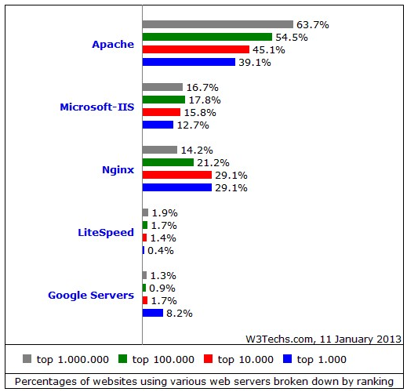
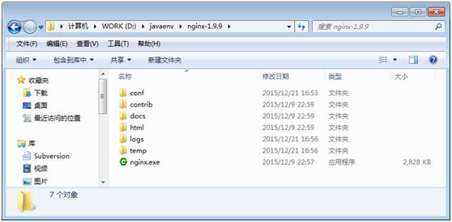
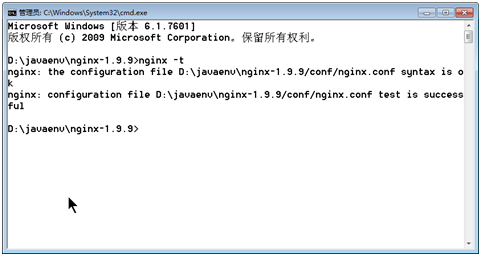
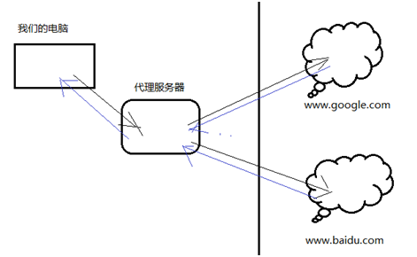
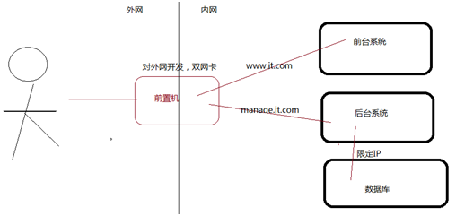
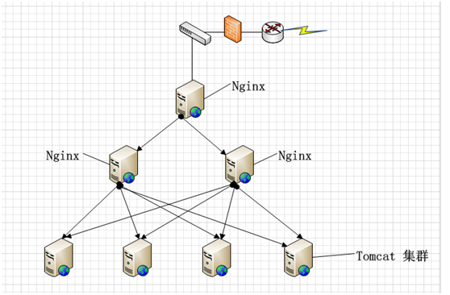

Nginx介绍，使用
本文于657天之前发表，文中内容可能已经过时。
Nginx高负载均衡服务器
简介
Nginx (“engine x”) 是一个高性能的 HTTP 和反向代理服务器，也是一个 IMAP/POP3/SMTP 代理服务器。 Nginx 是由 Igor Sysoev 为俄罗斯访问量第二的Rambler.ru 站点开发的，第一个公开版本0.1.0发布于2004年10月4日。其将源代码以类BSD许可证的形式发布，因它的稳定性、丰富的功能集、示例配置文件和低系统资源的消耗而闻名。
其特点是占有内存少，并发能力强，能够支持高达50000个并发连接响应。这归功于它选择了epoll and kqueue作为开发模型（socket数量不限制）(Apache采用的select开发模型)。它处理请求是异步非阻塞，在高并发下保持低资源低消耗高性能。非常稳定，bug极少。Apache使用处理每个连接都需要一个进程，其并发性能不是很好。而Nginx使用多路复用的技术，让一个进程处理多个连接，所以并发性能比较好。可以说构建大型网站无一例外都是使用nginx，如：新浪、网易、腾讯、京东、淘宝等。
- Nginx是一个高性能的HTTP和方向代理服务器
- 采用C语言编写
- 支持的操作系统众多，windows、linux、MacOS X
- 安全性高，外界只能访问nginx所在服务器，nginx将请求转发内部服务器。调用后，返回调用的结果
- 可实现负载均衡
Rewrite功能强大
电商、互联网架构大部分都采用Nginx+Tomcat的架构。
官网地址：http://nginx.org/en/download.html
###Nginx和Apache、IIS等比较

根据W3Techs公布的数据，Nginx目前已经在Web服务器领域有了一定的地位。
在排名前1000的网站中，Nginx占据了将近三分之一的席位（29.1%），已经取代了IIS（仅为12.7%）第二名的位置。当然，Apache还是当之无愧的老大，占39.1%。这表明，大型网站更愿意使用开源的web服务器。Google服务器也有8.2%的份额。
在排名前100万的网站中，主流服务器仍为Apache，占据了63.7%的份额，也有很大一部分使用IIS，占16.7%。Nginx占据了14.2%。
这得益于Nginx使用了最新的epoll（Linux 2.6内核）和kqueue（freebsd）网络I/O模型，而Apache则使用的是传统的select模型。目前Linux下能够承受高并发访问的Squid、Memcached都采用的是epoll网络I/O模型。
处理大量的连接的读写，Apache所采用的select网络I/O模型非常低效。下面用一个比喻来解析Apache采用的select模型和Nginx采用的epoll模型进行之间的区别：
假设你在大学读书，住的宿舍楼有很多间房间，你的朋友要来找你。select版宿管大妈就会带着你的朋友挨个房间去找，直到找到你为止。而epoll版宿管大妈会先记下每位同学的房间号，你的朋友来时，只需告诉你的朋友你住在哪个房间即可，不用亲自带着你的朋友满大楼找人。如果来了10000个人，都要找自己住这栋楼的同学时，select版和epoll版宿管大妈，谁的效率更高，不言自明。同理，在高并发服务器中，轮询I/O是最耗时间的操作之一，select和epoll的性能谁的性能更高，同样十分明了。Nginx目录结构

Nginx配置文件
conf/nginx.conf 系统配置：server，可以配置多个server 转发规则：location路径、root目录、index欢迎页面 反向代理规则：location拦截路径、proxy_pass转向地址、indexNginx优化
- user root; #对应系统哪个用户，最好专为nginx创建用户和组，并单独设置权限，这样安全。如：user nginx nginx。
- events I/O模型，Linux推荐使用epoll模型。
- worker_processes 1; #习惯配置和当前服务器的core数相同，或者2倍
- worker_connections 1024; #开启数为实际数量的1/4，浏览器访问时会自动发起2个；反向代理tomcat又是两个。这个数值和操作系统能打开的文件数。理论上并发数=worker_processes * worker_connections。跟物理内存大小也有关系，因为系统打开的文件数和系统的内存成正比。一般1GB内存可也打开大约10W左右。
- worker_rlimit_nofile #一个nginx进程打开最多的文件数目，配置和Linux下文件打开个数一致。ulimit –n来查看。最大设置为65535
- keepalive_timeout 设置65左右
- 尽量打开Gzip压缩，gzip_comp_level通常设置为3-5，太高会占用CPU
- Error日志优化，运行期间设置crit，可以减少I/O。
Nginx启动停止
启动： start nginx.exe （不能双击，双击后进程无法关掉）
停止： nginx.exe –s stop
重新加载： nginx.exe –s reload
验证安装是否成功： nginx.exe –t

注：Windows下有时停止无效，造成开启太多，手工结束进程。
Linux下部署Nginx
yum安装
yum install nginx #yum安装nginx，方便它的依赖包自动安装
whereis nginx #查看安装后的各目录
启动停止重启
nginx #直接执行，配置文件 /etc/nginx/nginx.conf
nginx -s stop #停止
nginx -s reload #更新
测试
nginx –t #测试nginx是否正常
执行结果：
nginx: the configuration file /etc/nginx/nginx.conf syntax is ok
nginx: configuration file /etc/nginx/nginx.conf test is successful
查看进程
[root@10-19-46-61 nginx]# ps -ef |grep nginx
执行结果：
root 28764 1 0 Mar14 ? 00:00:00 nginx: master process ./nginx
nginx 2071 28764 0 08:44 ? 00:00:00 nginx: worker process
nginx 2072 28764 0 08:44 ? 00:00:00 nginx: worker process
root 2399 2114 0 11:22 pts/0 00:00:00 grep nginx
常见问题
目前后台系统文件上传会有两个问题，一个图片上传保存到服务器，一个图片的回显，需要把nginx和tomcat和图片服务器执行http://image/jt.com指向同一台服务器。
nginx作用
反向代理
和日常我们上网不同，在公司我们上网时，不是所有电脑直接访问外网，而是访问一个代理服务器，由代理服务器再访问我们要访问的网站，代理服务器获得访问网站的返回信息后，再返回给我们。这种代理我们的电脑的方式叫做正向代理。

而nginx不同，它实现也是代理，但是代理的后台服务器，我们访问nginx，而nginx代理后面的服务器，由它去决定具体访问哪台服务器。这种方式和正向代理刚好反过来，所以把这种方式称作反向代理。
反向代理的好处，它屏蔽了后台具体的服务器，我们访问者根本不知道访问的哪台服务器，这样使访问更加安全。

通过前置机（也叫踏板机）将内网和外网隔离，用户只能访问前置机，其他的机器是无法直接访问内网中其他服务器资源，必须通过前置机中转，请求重定向才可以。这样保证了网络的安全。
流行的nginx部署结构

先通过一个nginx进行转发到2个nginx上，然后再通过nginx进行负载到多个tomcat集群上。这样的结构优点是，防止单个节点压力过重。也可以实现keepalive和HAProxy+nginx集群，实现nginx高可用。
请求转发
当用户访问http://localhost:80，nginx将这个请求什么也不做，只负责转发到tomcat的访问地址http://localhost:8080
server {
listen 80;
server_name localhost;
location / { #拦截所有的资源
proxy_pass http://127.0.0.1:8080; #转向tomcat的地址
}
}
动静分离（指向一个目录）
静态资源：图片、css、js、html（静态资源处理时并发非常高）
动态资源：asp/aspx、php、jsp
nginx默认配置
location / {
root html; #相对路径，配置了一个html目录，我们可以将网站所用到的所有的静态资源从war中移除，放到这个目录下。
index index.html index.htm; #配置的欢迎页面
}
传统将项目是把资源一起放到war中，而动静分离是把静态资源从war中剥离出来，单独放在一个目录中。这样当访问静态资源时，就由nginx直接重定向文件资源。当访问动态资源就由tomcat解析。nginx解析静态比tomcat快很多。
图片服务器（指向一个目录）
#图片服务器 C:\Windows\System32\drivers\etc\hosts
server {
listen 80;
server_name image.xx.com; #域名地址，修改hosts文件做一个配置 image.jt.com 127.0.0.1
location / {
root c:\\jt-upload; #图片文件所在目录，按日期来分目录：yyyy/mm/dd/uuid.jpg或者当前时间的毫秒数+随机值.jpg
}
}
目录：C:\jt-upload\images\2016\03\07\607.jpg
访问：http://image.xx.com/images/2016/03/07/607.jpg
负载均衡
提供4种负载均衡策略：
- 轮询：每个请求按时间顺序轮流分配到不同的后端服务器，如果后端服务器down掉，能自动剔除。
- 权重：指定轮询几率，weight和访问比率成正比，用于后端服务器性能不均的情况。
- IP_HASH：每个请求按访问ip的hash结果分配，这样每个访客固定访问一个后端服务器，针对解决session共享问题。
URL_HASH（第三方）：访问url的hash结果来分配请求，使每个url定向到同一个后端服务器，后端服务器为缓存时比较有效。FAIR（第三方）：按后端服务器的响应时间来分配请求，响应时间短的优先分配。针对解决session共享问题。
轮询
默认配置，tomcats有n个，请求就被平均分配到这n个服务器上。请求次数%n，平均分配到每个服务器。 例子：3个tomcat 修改3个端口，在同一台服务器上启动3个tomcat。每个tomcat下放一个index.html。然后内容修改，分别展示T1，T2，T3。当请求nignx，通过这种方法验证得出默认nginx轮询这3个页面，但顺序不一定是配置的顺序。 前台，有3个tomcat集群，用户访问时轮询转向到某一个tomcat server { listen 80; server_name www.jt.com; location / { #拦截所有的资源 proxy_pass http://jt_tomcats; #引用定义的upstream } } 配置一个upstream，声明一个名称xx_tomcats，配置多个ip地址转向，默认就是轮询。 upstream xx_tomcats { server 127.0.0.1:8080; server 127.0.0.1:8090; server 127.0.0.1:8100; } 轮询方式存在问题：服务器有性能比较好的，有性能比较差的。新的服务器的配置比旧的服务器强悍很多。CPU核也多，内存也大，硬盘容量也大，速度还快。 如果还使用轮询的方式，就会造成新服务器资源的浪费，旧的服务器资源压力大。显然资源分配不合理，应该多劳多得。权重
前台，有3个tomcat集群，用户访问时轮询转向到某一个tomcat server { listen 80; server_name www.xxx.com; location / { #拦截所有的资源 proxy_pass http://xx; #引用下面定义的upstream } } 配置一个upstream，声明一个名称jt，配置多个ip地址转向，默认就是轮询 upstream xx { server 127.0.0.1:8080 weight=8; #访问请求分成9份，这个tomcat负责8份的链接 server 127.0.0.1:8090 weight=1; #访问请求分成9份，这个tomcat负责1份的链接 server 127.0.0.1:8100 down; #这个tomcat暂时不参加负载 }
评论系统未开启，无法评论！